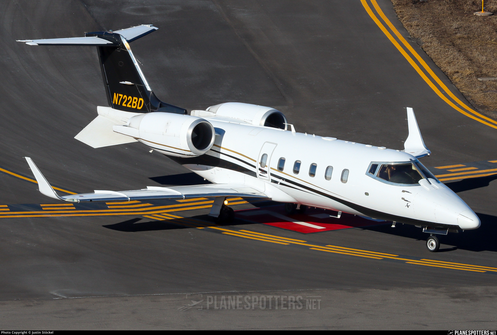
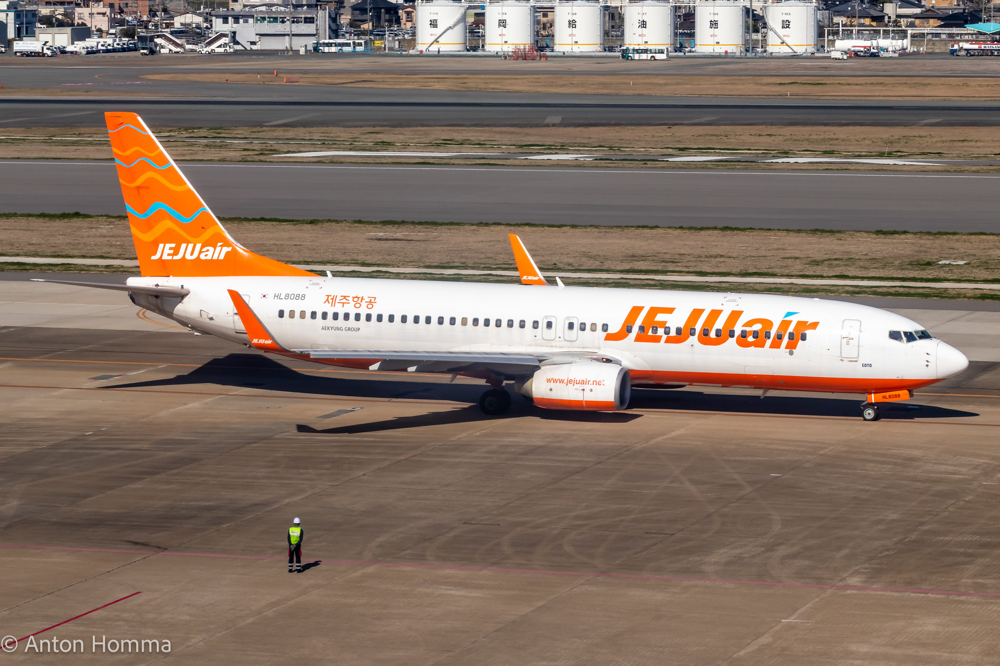
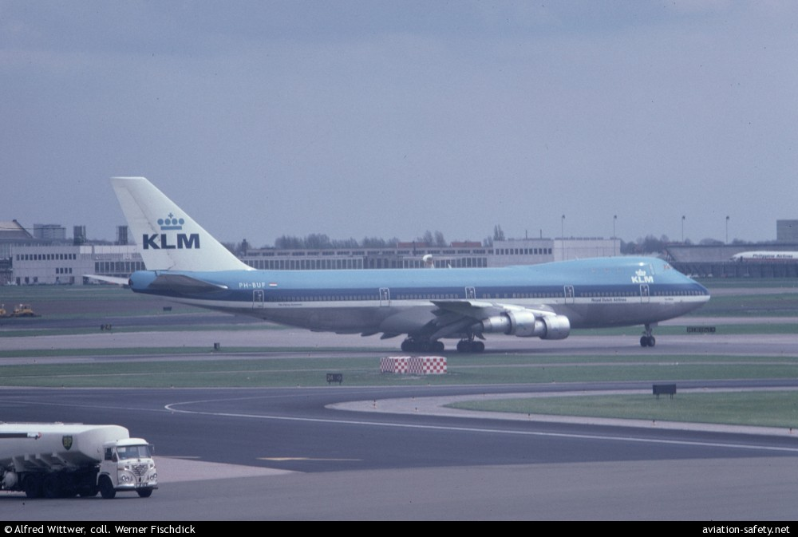
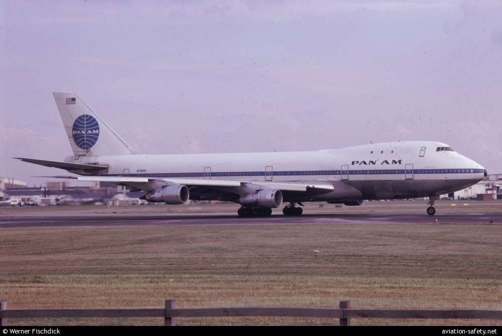
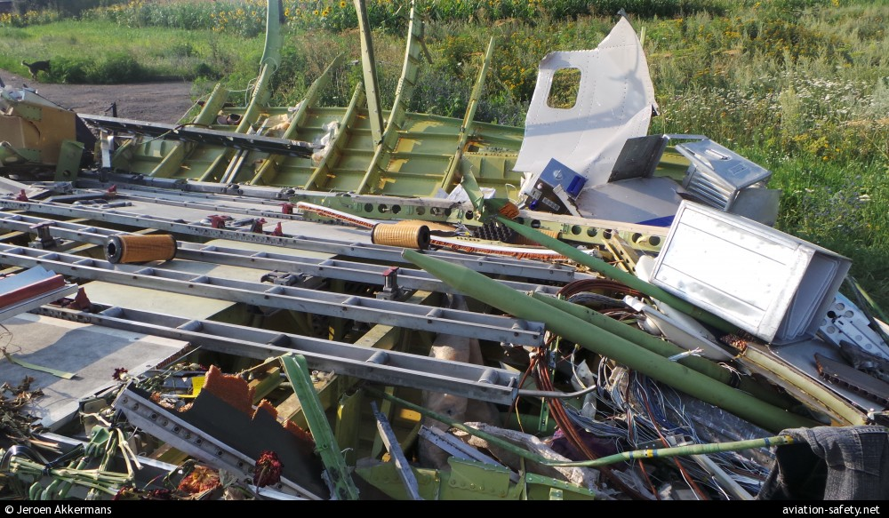
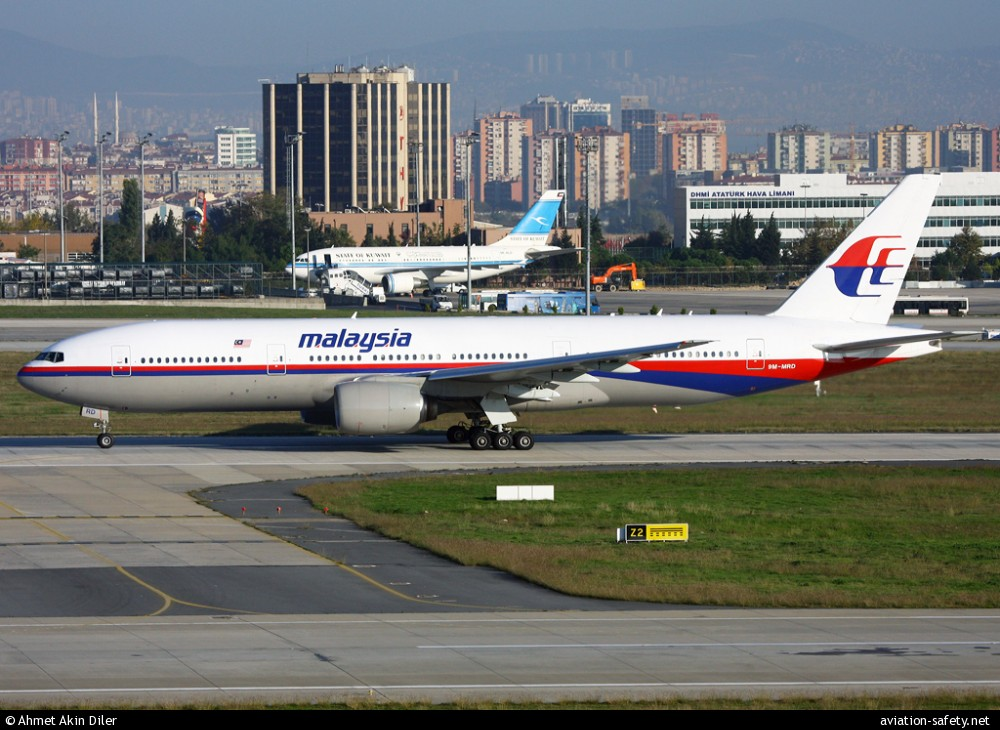
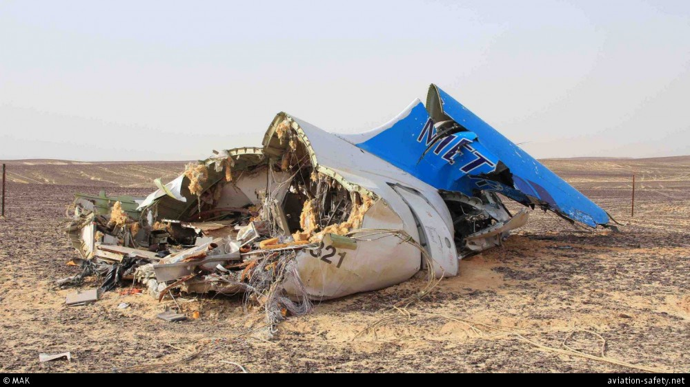
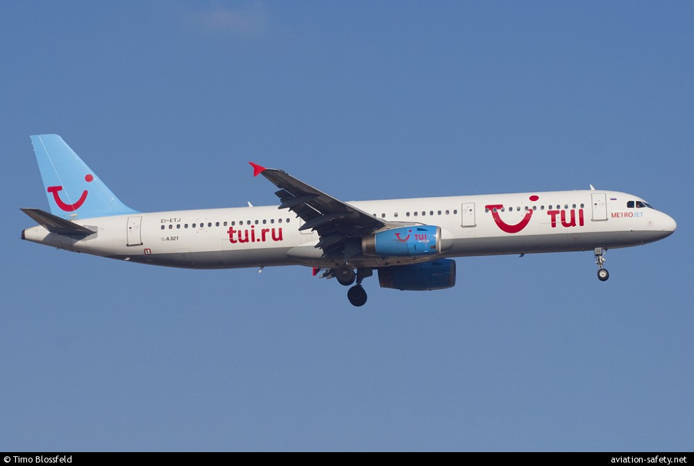
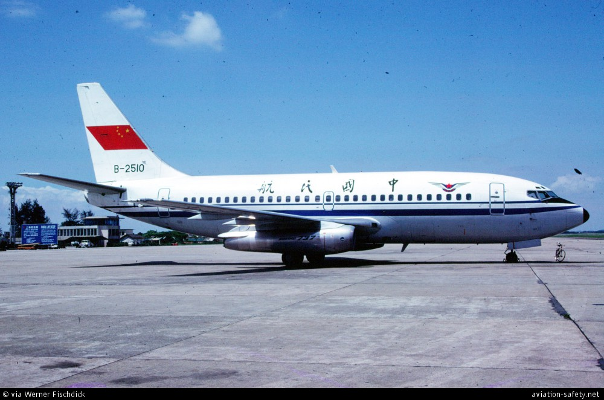
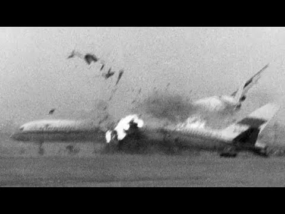

Worst Disasters to Occur.
Accidents in aviation are disastrous.
Making a mistake and crashing in your car may cost you your life. But, when youre in charge of an aircraft with 200+ lives on board, it gets catastrophic.
Learjet 60 Crash

"A Learjet 60, N722BD, impacted the ground in Greenacres, Florida. The aircraft disintegrated and a fire erupted. All nine people onboard perished."
ADS-B data show the aircraft climbed to FL354. From that point on the aircraft made a descending
right-hand turn and an increasing rate of descent to over -30000 feet per minute. During the
descent, N722BD declared a Mayday, stating they were banking 60 degrees and at a high rate of
descent.0
The aircraft impacted the side of South Military Trail, Greenacres, Florida at 17:50 UTC.
The NTSB reported that most of the left elevator was found in three pieces between 1.3 miles (2
kilometers) and 3.8 miles (6.1 kilometers) from the impact location.
No other pieces of the plane were recovered.
Jeju Air Flight 2216 Crash

"The aircraft disintegrated and burst into flames, while the tail separated near the beginning of the vertical stabiliser and remained relatively intact. "
December 29th 2024.
Jeju Air Flight 7C 2216, a Boeing 737-800 registered HL8088, was involved in an accident at Muan
International Airport (MWX/RKJB), South Korea. The aircraft made a gear-up landing on runway 19,
slid past the end of the runway and collided with the ILS localizer antenna array that was
installed in a concrete platform.
Of the 181 occupants, two flight attendants seated in the tail section survived the
accident.According to a preliminary report, released by ARAIB on January 27, the pilots
identified a group of birds while approaching runway 01
According to a preliminary report, released by ARAIB on January 27, the pilots identified a
group of birds while approaching runway 01.
Tenerife Airport Collision


"KLM flight KL4805, a Boeing 747-200, and Pan Am flight PA1736, a Boeing 747-100, collided on the runway at Tenerife-Los Rodeos International Airport, killing all 248 occupants on the KLM aircraft and 335 occupants on the Pan Am flight. "
March 27th, 1977.
At 12:30 local time, a bomb exploded in the Las Palmas passenger terminal. Because
of warnings of a possible second bomb, the airport was closed. A large number of flights were
diverted to Tenerife, a.o. KLM Flight 4805 from Amsterdam and PanAm Flight 1736 (coming from Los
Angeles and New York). Both aircraft were parked on a crowded apron until Las Palmas Airport opened
to traffic again at 15:00.
The KLM aircraft had taken off without take-off clearance, in the absolute conviction that this
clearance had been obtained, which was the result of a misunderstanding between the tower and the
KLM aircraft.
This misunderstanding had arisen from the mutual use of usual terminology which, however, gave rise
to misinterpretation.
In combination with a number of other coinciding circumstances, the premature take-off of the KLM
aircraft resulted in a collision with the Pan Am aircraft, because the latter was still on the
runway since it had missed the correct intersection.
Malaysia 17 Bombing


"A Boeing 777-200 passenger plane, operating Malaysia Airlines Flight MH17, was destroyed in an accident in eastern Ukraine, near Hrabove. All 298 on board were killed. "
July 17th 2014.
The airplane apparently broke up in mid-air as debris was found in a large area. The centre section
of
the fuselage along with parts of the horizontal and vertical stabilizers was found near Hrabove. The
cockpit and lower nose section came down in a sunflower field in Rozsypne, nearly four miles (6,5
km)
west-southwest of Hrabove. The L2 and R2 doors along with various parts of the fuselage were found
near
Petropavlivka, about 5 miles (8 km) west of Hrabove.
At the point of last contact it was flying 1000 feet above airspace that had been classified as
restricted by Ukrainian authorities as a result of ongoing fighting in the area. In the preceding
days
before the accident two Ukraine Air Force aircraft that were shot down in the region: a Su-25 and an
An-26 transport plane.
The impact killed the three persons in the cockpit and caused structural damage to the forward part
of
the aeroplane leading to an in-flight break-up. All 298 occupants lost their lives.
Metrojet Flight 9268 Crash


"Metrojet flight 9268, an Airbus A321, crashed in North Sinai, Egypt, following the in-flight detonation of an explosive device, killing all 224 occupants. "
October 31st 2014.
The Russian Federal Security Service stated on November 16 that the crash was caused by a terrorist
attack. Traces of explosives were found in the wreckage of the plane. During the flight, a homemade
device with the power of 1.5 kilograms of TNT was detonated.
The Russian Interstate Aviation Committee reported that it was determined that the aircraft skin had
undergone high energy dynamic influence (from inside to outside) and that internal overpressure
caused an inflight rapid decompression. Investigators reported that they believed the aircraft broke
up in the air. Footage from the crash scene shows a main impact zone of the forward fuselage and
wings. Engines were found away from the main wreckage, as was the tail section of the
aircraft.
The debris is scattered over a wide area more than 13 km in length.
Guangzhou Airport Collision


"Xiamen Airlines flight 8301, a Boeing 737-200, struck two aircraft during an attempted landing at Guangzhou-Baiyun Airport, China, after being hijacking, killing 82 occupants and 46 persons on another aircraft. "
October 2nd 1990.
Xiamen Airlines flight 8301, a Boeing 737-200, struck two aircraft during an attempted landing at
Guangzhou-Baiyun Airport, China, after being hijacking, killing 82 occupants and 46 persons on
another aircraft.During landing or in the final phase of the approach a struggle took place in the
cockpit. The Boeing touched down hard and swung to the right. It clipped a parked China Southwest
Airlines Boeing 707 (B-2402) plane, ripping open the cockpit. The 737 continued and struck the left
wing and centre fuselage of a China Southern Boeing 757 (B-2812) which was waiting for takeoff
clearance. It then flipped over and broke apart. A fire broke out.
A total of 120 occupants of both aircraft were killed. Eight people later died in hospital. Among
the fatalities, 82 victims came from B-2510 and 46 from B-2812.
The hijacker was a 21-year old male. No explosives were found on his body. He was wanted by the
local police from Linli County because he had stolen 17,000 yuan (US 3,600 by 1990 standards) from
his company.